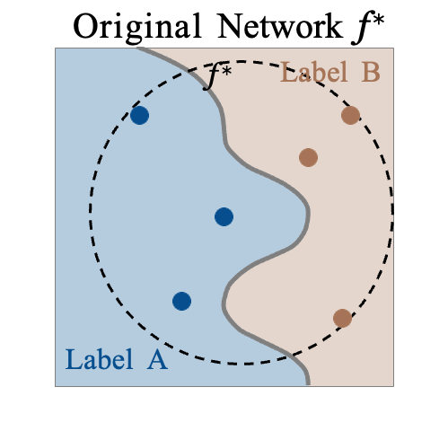
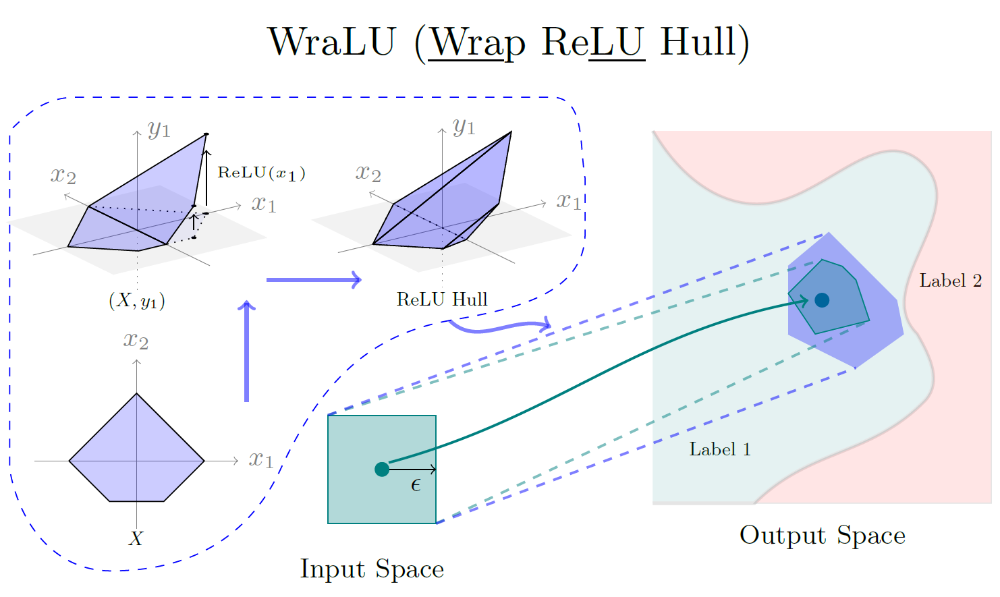

Welcome to Zhongkui's personal website!
Hi there! I'm Zhongkui Ma, currently diving deep into my PhD journey at the University of Queensland.
I'm fortunate to be supervised by the amazing A/Prof. Guangdong Bai.
My research passion revolves around the fascinating world of neural network verification. Additionally, I'm captivated by the theoretical underpinnings of neural networks.
Thanks for stopping by! Feel free to explore and connect with me.
- [May. 2024] I will have a presentation about ReLU Hull Approximation at Formal Methods in Australia and New Zealand during 29 May - 30 May 2024 at The University of Queensland, St Lucia. My presentation time is 15:30-16:00 on 30 May 2024.
- [Apr. 2024] I will present our work ReLU Hull Approximation in FPench community monthly meeting on May 2nd at 9:00-10:00 AM Pacific time.
- [Apr. 2024] Our paper CORELOCKER: Neuron-level Usage Control is accepted by the 45th IEEE Symposium on Security and Privacy (SP 2024). [PDF][GitHub]
- [Jan. 2024] I present our work, ReLU Hull Approximation, in London, UK. [Video]
- [Jan. 2024] I am serving the 45th ACM SIGPLAN Conference on Programming Language Design and Implementation (PLDI 2024) as a member of the Artifact Evaluation Committee!
- [Nov. 2023] Our paper ReLU Hull Approximation is accepted by the 51st ACM SIGPLAN Symposium on Principles of Programming Languages (POPL 2024). [PDF] [GitHub] [Profile] [Video]
CORELOCKER: A simple usage control for large networks! (S&P'24)
This is a work about neural network security. We design a method to control the usage of neurons in a neural network. We theoretically and empirically show that only a few neurons control the performance of the neural network. By this "core" neurons, we can take them as a "locker" to control the usage of the neural network. It supports different levels of usage control.
Learn more about it by clicking the figure made by my bro, Zihan!

WraLU: An amazing method to calculate ReLU hull! (POPL'24)
Hi! This is a work about neural network verification. We design an amazing method to calculate the convex hull of the ReLU function and this gives us some linear constraints that cannot be easily calculated by normal method. These linear constraints really help ReLU network verification. We believe it open a new world to calculate linear constraints of non-linear activation functions.
Learn more about this work by clicking the figure below.

- CORELOCKER: Neuron-level Usage Control
Zihan Wang, Zhongkui Ma, Xinguo Feng, Ruoxi Sun, Hu Wang, Minhui Xue, Guangdong Bai. 2024, the 45th IEEE Symposium on Security and Privacy (SP'24), San Francisco, USA. [PDF] - ReLU Hull Approximation.
Zhongkui Ma, Jiaying Li, Guangdong Bai. 2024, the 51st ACM SIGPLAN Symposium on Principles of Programming Languages (POPL'24) , London, UK. [PDF] [GitHub] [Profile] [Video] - Verifying Neural Networks by Approximating Convex Hulls. (Doctoral Symposium)
Zhongkui Ma. 2023, International Conference on Formal Engineering Methods (ICFEM'23), Brisbane, Australia. [PDF] - Formalizing Robustness Against Character-Level Perturbations for Neural Network Language Models.
Zhongkui Ma, Xinguo Feng, Zihan Wang, Shuofeng Liu, Mengyao Ma, Hao Guan, Mark Huasong Meng. 2023, International Conference on Formal Engineering Methods (ICFEM'23), Brisbane, Australia. [PDF] [GitHub]
The following early works are about Social Simulation and Agent-based Models (ABM), supervised by Dr. Haixin Ding and published during my undergraduate period (2014-2018).
-
Does Truthfully-Stating Strategy Really Have its Reward? — Research on the Communication Strategies
of Innovation Quality (Chinese Full Text).
Haixin Ding, Li Xie, Zhongkui Ma. Technology Intelligence Engineering. [PDF] -
Model of Weibo Negative Public Opinion Communication in Colleges and Universities Based on Double-layer
Network (Chinese Full Text).
Zhongkui Ma. Journal of Jiamusi Vocational Institute. [PDF]